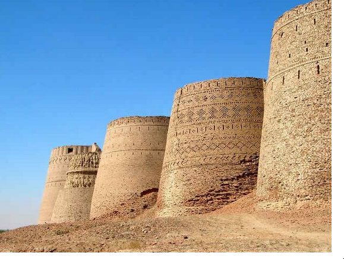

Top 10 Most Famous Cities Of Pakistan
Pakistan is an Islamic country and considered to be as a sovereign country in the whole world. Pakistan is the 36th largest and sixth populous country among all. Well, Pakistan is the beautiful country that have so many amazing places and popular cities. Here in this i have selected the top 10 most popular cities of Pakistan. You will find their name and the reason of popularity below:
Top 10 Most Beautiful Cities Of Pakistan
There are so many cities in Pakistan but here is a list of top 10 popular and famous cities of Pakistan that are popular for their culture and tradition. Let's check out them below:
- Karachi
- Lahore
- Faisalabad
- Peshawar
- Rawalpindi
- Islamabad
- Multan
- Gujranwala
- Quetta
- Sialkot
On the first number we have Karachi, which is called the city of light. Karachi is the largest city of Pakistan and located in Sindh and also considered to be as the capital of Sindh. Karachi is the largest of main seaport and financial/economical center of Pakistan. The population of Karachi is about 11,136,886 which is highest among all cities.
Lahore is one of the most famous city of Pakistan which is also a capital of Punjab. Lahore is famous due to their cultural events and delicious street food. Lahore is the second largest city of Pakistan and the largest native-Punjabi populated city in the world. The population of Lahore is about 6,658,393.
Faisalabad is the third largest city of Pakistan and second largest in the province of Punjab after Lahore. Faisalabad is famous because of its largest agriculture and industrial textiles. The population of Faisalabad is about 2,600,525which is very high.
READ: 10 Yoga Poses For Diabetes Patients

Peshawar is the famous and popular city in Pakistan. Peshawar is the capital of province Khyber Pakhtoon Khuan (whose old name was NWFP). Peshawar is the administrative center and central economic hub of Federally Administered Tribal area’s. It is located at Pak-Afghan border and population of 1,550,046.
Rawalpindi is the sixth largest city of Pakistan according to population. It is the fourth largest city in the pothohar region of Pakistan and located in the near of Islamabad and the province ofPunjab. The population of Rawalpindi is 1,466,063,in which most are Punjabi.

On the number one, Islamabad is the most famous and popular city of Pakistan. This is also a capital of Pakistan and ninth largest cities in the whole world.Islamabad was constructed in year 1960‘s and has a population of about 1,391,534 and located in the Capital of Territory.

Multan is on the number eight according to population. Multan is a agricultural city in Punjab and third largest city by area of Pakistan. The city is located on the banks of Chenab in the geographic center of Pakistan. The population of Multan is about 1,303,351.
READ: 5 Famous Restaurants In Karachi

Gujranwala is the ninth largest city of Pakistan. Gujranwala is the agricultural and industrial city in the north-east of Punjab. Gujranwala is famous and popular because of their tradition and located in Punjab. The population of Gujranwala is 1,082,262.
Quetta is the tenth largest city of Pakistan, which is famous for its beautiful visiting places. Quetta is located in the Baluchistan and has a population of 842,410.Quetta is the capital of province Baluchistan and known as fruit garden due to the diversity of plant and animal wildlife. It is located in Pak-Iran border.
In the last, we have Sialkot, which is the 12th largest city of Pakistan. Sialkot is located in the north-east of Punjab and near the River Chenab. It is located at the foot of Kashmir hills with a population of 545,646.